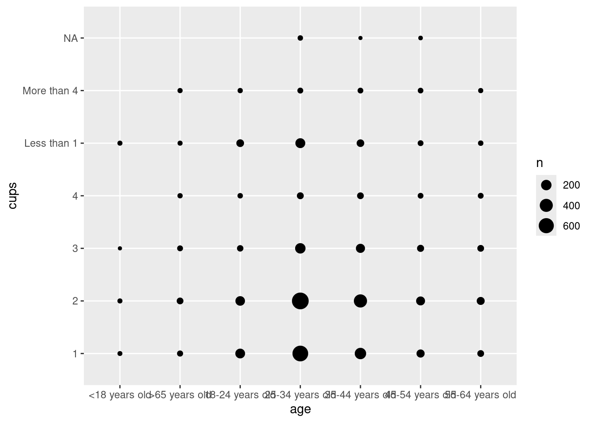
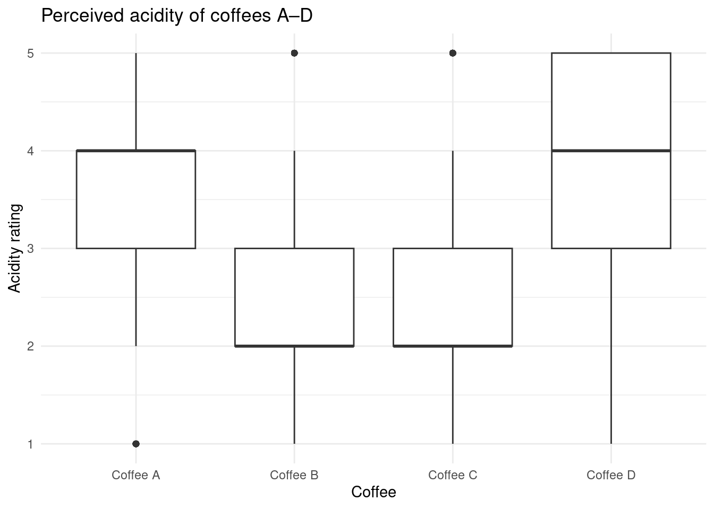

Taste testing coffee results
R
26Summer
data: coffee_survey.csv
Does your age impact the way you like to make your coffee?
This plot shows age group, preference of coffee making method, and the number of cups of coffee an individual generally consumes.
What age group drinks the most cups of coffee?

Seems like 24-35 year olds usually have one or two cups of coffee (or, this means that there were more 24-35 year olds sampled than other age groups. Whoops.).
Which of the blind-tasted coffees are percieved as the most acidic?

Looks like coffee A and D were the most acidic, as voted by the taste-testers.